UDN
Search public documentation:
DistributionAppleiOSCH
English Translation
日本語訳
한국어
Interested in the Unreal Engine?
Visit the Unreal Technology site.
Looking for jobs and company info?
Check out the Epic games site.
Questions about support via UDN?
Contact the UDN Staff
日本語訳
한국어
Interested in the Unreal Engine?
Visit the Unreal Technology site.
Looking for jobs and company info?
Check out the Epic games site.
Questions about support via UDN?
Contact the UDN Staff
发布iOS应用程序
概述
Distribution Provisioning（发布时的信息提供）
生成Distribution Provisioning
获得Distribution Provisioning的及签名证书步骤和获得development mobile provision及签名证书的步骤一样，通过 iOS Provisioning Portal 来完成，但实际这次使用iOS Provisioning portal网站的Distribution(发布)选卡。 请参照iOS Provisioning Portal概述页面获得详细信息。- 获得Distribution Certififcate - 通过 iOS Provisioning Portal 生成发布证书的指南。
- 创建Distribution Profiles -通过 iOS Provisioning Portal 创建distribution provisioning profiles(发布的信息提供概述)的指南。
安装Distribution Provisioning
-
启动iPhonePackager工具的GUI（访问Unreal iOS Configuration Wizard(Unreal iOS配置向导)）。现在应该出现了Unreal iOS Configuration Wizard。

-
点击按钮来打开 Unreal iOS Configuration:Signing Tool 部分的 _Provisions and Certs(信息提供和证书) 选卡 。

-
点击
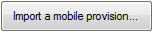
按钮来导入distribution profile(发布概述文件)。请使用打开的文件对话框来选择您的发布mobile provisioning profile(移动设备信息提供概述)。这将不会立刻显示出导入过程是否成功。但是，如果您点击 按钮，将会显示新的provisioning profile(信息提供概述)。
按钮，将会显示新的provisioning profile(信息提供概述)。

-
点击按钮来导入distribution certificate(发布证书)。请使用打开的文件对话框来选择您的Distribution certificate(发布证书)。将会弹出一个消息框提示您导入您的密钥对。
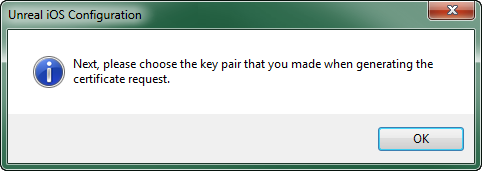
点击 OK(确认) 并使用打开的文件对话框找到密钥对文件。同样，您必须点击按钮来显示新的证书。
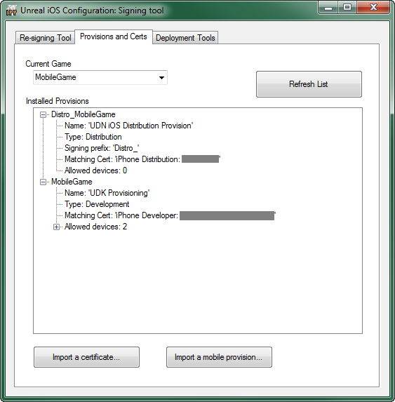
要求的资源和信息
/UDKGame/Build/IPhone/Resources/Graphics/Icon%402x.png /UDKGame/Build/IPhone/Resources/Graphics/Icon.png /UDKGame/Build/IPhone/Resources/Graphics/Icon-72.png /UDKGame/Build/IPhone/Resources/Graphics/Icon-Small%402x.png /UDKGame/Build/IPhone/Resources/Graphics/Icon-Small.png /UDKGame/Build/IPhone/Resources/Graphics/Icon-Small-50.png关于iOS应用程序图标的更多信息，请参照iOS参考指南库的iPad和iPhone上的应用程序图标页面。 Application Info(应用程序信息) 当在iPhonePackager中时，您也应该使用"Already a registered iOS developer(已经注册为iSO开发者)"选卡上的 "Edit Info.plist overrides(编辑Info.plist 覆盖)..."按钮来检查显示的名称和包标识符，以确保它们是正确的。如果您想在发布版本中覆盖一些Info.plist设置，那么您可以编辑Distro_UDKGameOverrides.plist 文件而不是编辑UDKGameOverrides.plist 文件。 iTunes Artwork(iTunes美术作品) 您需要一个 512x512的图像作为在iTunes中代表您应用程序的图像。这通常是应用程序图表的较大的版本。这个图像必须是以下格式和尺寸之一：
| 格式 | 尺寸 | DPI | 颜色空间 |
|---|---|---|---|
| .jpg, .jpeg, .png, .tif .tiff | 512x512 | 72+ dpi | RGB |
| 格式 | 尺寸 | DPI | 颜色空间 | |
|---|---|---|---|---|
| iPhone/iPod Touch | .jpg, .jpeg, .png, .tif .tiff | 320x480, 480x320, 320x460, 640x960, 960x640 | 72+ dpi | RGB |
| iPad | .jpg, .jpeg, .png, .tif .tiff | 768x1024, 1024x768, 748x1024, 1004x768 | 72+ dpi | RGB |
创建发布IPA
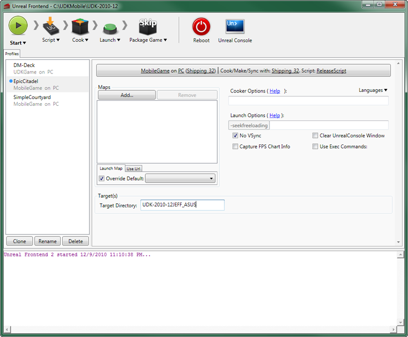
-
点击按钮来打开配置设置：

-
请确保按照以下方式进行设置:

点击Game(游戏) Platform(平台) Game Config(游戏配置) Script Config（脚本配置） Cook/Make Config(烘焙/制作 配置) UDKGameIPhoneShipping_32ReleaseScriptShipping_32 按钮来保存设置。
按钮来保存设置。
-
如果以前 Mobile(移动设备) 部分不可见，那么现在它应该是可见的。
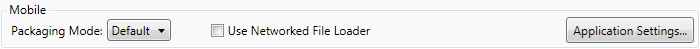
把 Packaging Mode(打包模式) 改为 Distribution(发布) 。
-
接下来，您需要添加需要打包到应用程序中的所有地图。这可以在 maps(地图) 部分完成：
 点击
点击  按钮。将会打开一个窗口，列出当前游戏项目的所有现有地图。
按钮。将会打开一个窗口，列出当前游戏项目的所有现有地图。
 在列表中选择您想添加的地图：
在列表中选择您想添加的地图：
 点击
点击  按钮来添加地图并关闭窗口。现在地图应该列在地图列表中了:
按钮来添加地图并关闭窗口。现在地图应该列在地图列表中了:
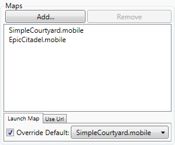
-
请确保设置默认加载地图：
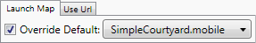
-
点击
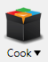
按钮，这将会弹出一个下拉菜单，然后选择 Clean and Full Recook(清除并完全重新烘焙) 。 在烘焙进行过程中，将显示
在烘焙进行过程中，将显示 图形。一旦完成，输出窗口将会显示结果。
图形。一旦完成，输出窗口将会显示结果。
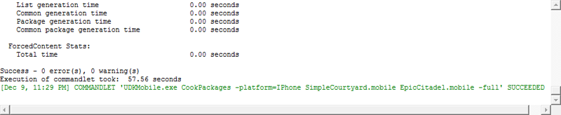
-
点击
 按钮，这将会弹出一个下拉菜单，然后选择 Package iOS App(打包iOS应用程序)_ 。
按钮，这将会弹出一个下拉菜单，然后选择 Package iOS App(打包iOS应用程序)_ 。
 在打包进行过程中，将显示 图像。一旦完成，输出窗口将会显示结果。
在打包进行过程中，将显示 图像。一旦完成，输出窗口将会显示结果。
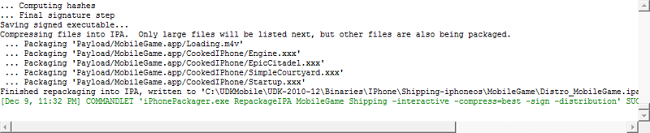
注意: 当_Packaging Mode(打包模式)_ 设置为Distribution(发布)时,它将生成 仅能 上传到app store的IPA。不能在您的iOS设备上安装它们。因此，如果您点击Start（启动），直到最终Deploy（部署）步骤之前都可以顺利进行，但当到达该步骤时将失败。如果您想测试您的所有地图是否正确等...那么您可以把 Package Mode(包模式) 切换回Default(默认)，然后再按下Start（启动)按钮。 当打包步骤完成后，在以下目录中您应该可以看到名称为Distro_UDKGame.ipa的文件：[UDK install path]\Binaries\IPhone\Shipping-iphoneos\UDKGame
这就是要通过Application Loader程序上传到application store(应用程序商店)中的文件。
提交和上传
iTunes连接
提交过程的下一步就是使用 iTunes Connect(iTunes连接) 。*iTunes Connect* 是Apple的开发者网站的 iOS Dev Center(iOS开发中心) 的一个部分，Apple开发者网站有一些用于管理应用程序、提交应用程序以及用于跟踪已经存在于App Store中的应用程序的统计数据的工具。 注意: 您可以点击应用程序提交页面上的任何域旁边的按钮来查看那个域的解释或简单提示信息。-
iTunes Connect 可以通过登录到Apple iOS Dev Center(Apple iOS开发中心)并点击右侧的"iTunes Connect"链接来进行访问。
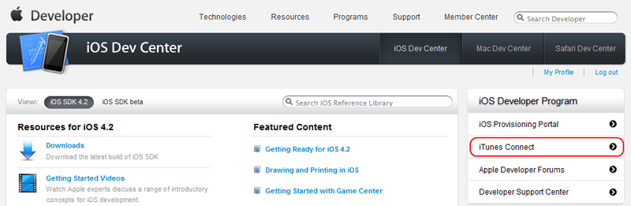
如果这是您第一次使用 iTunes Connect ，您将会看到 Terms of Service(服务条款) 页面。 您必须同意这些条款才能继续操作。选中表示同意的复选框，然后点击
您必须同意这些条款才能继续操作。选中表示同意的复选框，然后点击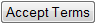
按钮来到 iTunes Connect 主页。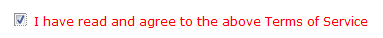
-
点击 Manage Your Applications(管理您的应用程序) ，如以下高亮显示的部分所示：
 这将把您带到 Manage Your Apps(管理您的应用程序) 页面。如果这是您第一次提交应用程序，那么应用程序列表是空的。
这将把您带到 Manage Your Apps(管理您的应用程序) 页面。如果这是您第一次提交应用程序，那么应用程序列表是空的。

-
点击
 按钮来启动添加新应用程序的过程。如果这是您第一次提交应用程序，那么这将会将您带到 New Application(新应用程序) 页面。
输入以下信息：
按钮来启动添加新应用程序的过程。如果这是您第一次提交应用程序，那么这将会将您带到 New Application(新应用程序) 页面。
输入以下信息：
- Primary Language(主要语言) - 选择当使用这个开发者账户输入您的应用程序提交信息时您想使用的语言。
- Company Name(公司名称) - 输入和您使用这个开发者账户提交的应用程序相关的公司的名称。
 点击
点击 按钮来提交信息。将会出现一个消息框让您确认这个信息是否正确，因为一旦提交后就不能对其进行修改。
按钮来提交信息。将会出现一个消息框让您确认这个信息是否正确，因为一旦提交后就不能对其进行修改。
 如果信息是正确的那么点击 OK(确认) 继续来到 App Information(应用程序信息) 页面。
如果信息是正确的那么点击 OK(确认) 继续来到 App Information(应用程序信息) 页面。
-
输入以下关于您正在提交的应用程序的信息：
- App Name(应用程序名称) - 输入您想在App Store中使用的应用程序名称。
- SKU Number(SKU编号) - 输入用于标识您正在提交的应用程序的唯一编号 (在您提交的应用程序中)。
- Bundle ID(包ID) - 选择和这个应用程序相关的Bundle ID。
 点击 按钮继续来到 Rights and Pricing(权利和定价) 页面。
点击 按钮继续来到 Rights and Pricing(权利和定价) 页面。
-
输入以下信息：
- *Availability Date(可用日期)- 设置该应用程序第一次出现在App Store中的日期。
- *Price Tier(价格级别)- 选择应用程序的价格。
- Discount for Educational Instituations(提供给教育机构的折扣) - 判断教育机构在这款应用程序上是否可以获得折扣。
 点击 按钮继续来到 Version Information(版本信息) 页面。
点击 按钮继续来到 Version Information(版本信息) 页面。
-
输入以下信息：
Metadata
- Version number(版本号) - 输入应用程序的版本号(比如1.0, 1.01等)。
- Description(描述) - 输入针对正在提交的应用程序的描述信息。包括功能和特点。关键词数量必须少于4000字节。
- Primary Category(主要类别) - 选择一个可以最好地描述正在提交的应用程序的类别。
- Subcategory(子类) - 在上面的类别中选择两个子类。
- Keywords(关键词) - 输入一些关键词来描述正在提交的应用程序。这些关键词会在用户搜索 App Store时用到。关键词数量必须少于100字节。
- Copyright(版权) - 输入具有该应用程序的专用权的个人或实体的名称，在前面加上获得权力那一年的年份。(比如 2010 Epic Games, Inc.）
- Contact Email Address(联系邮件地址) - 输入用于可以联系您获得支持的邮箱。(比如support@example.com)
- Support URL(支持URL) - 输入一个用户可以到那里获得关于该应用程序帮助的URL。(比如，http://support.example.com)
- Large 512x512 Icon(大的512x512图标) - 上传您要在itunes显示的代表应用程序的美术图片。
- iPhone and iPod Touch Screenshots(iPhone和iPod Touch屏幕截图) - 上传您的iPhone/iPod Tuch屏幕截图。
- iPad Screenshots(iPad屏幕截图) - 上传您的iPad屏幕截图。
(点击获得完整尺寸) 点击按钮来保存应用程序的信息。这将把您带到应用程序的 App Summary(应用程序概述) 页面。
点击按钮来保存应用程序的信息。这将把您带到应用程序的 App Summary(应用程序概述) 页面。

-
点击
 按钮查看应用程序的 App Details(应用程序详细介绍) 页面。
(点击获得完整尺寸)
按钮查看应用程序的 App Details(应用程序详细介绍) 页面。
(点击获得完整尺寸) 您可以点击
您可以点击  按钮来编辑显示在这个页面上的任何信息。
按钮来编辑显示在这个页面上的任何信息。
-
点击来继续操作。将会显示 Export Compliance(导出证书) 页面。
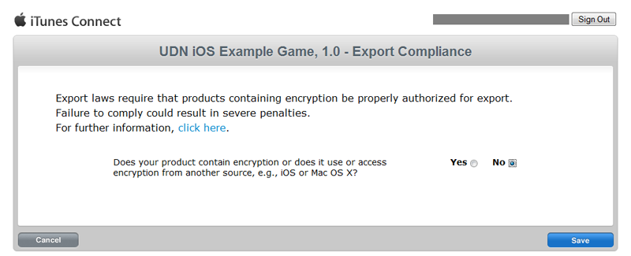
说明在您的应用程序中是否使用了加密，然后点击 按钮来继续。这将会弹出一个解释说明您现在可以通过 Application Loader 上传应用程序的页面。 点击 按钮来继续操作。
点击 按钮来继续操作。
-
您应该会被带回到 App Details(应用程序详细介绍) 页面，这时 按钮已经不再存在，应用程序的状态已经变为 Waiting For Upload(等待上传) 。
(点击获得完整尺寸)
 点击 按钮返回到 App Summary(应用程序) 概述页面。现在，应用程序的状态应该是 Waiting For Upload(等待上传) 。
点击 按钮返回到 App Summary(应用程序) 概述页面。现在，应用程序的状态应该是 Waiting For Upload(等待上传) 。
 点击
点击 按钮来完成过程。这时您会回到 Manage Your Apps(管理您的应用程序) 页面，该页面现在显示了新的应用程序。
按钮来完成过程。这时您会回到 Manage Your Apps(管理您的应用程序) 页面，该页面现在显示了新的应用程序。


Application Loader(应用程序加载器)
上传distribution IPA(用于发布的IPA)需要您的计算机运行安装了Application Loader(应用程序加载器)的OSX。Application Loader应该作为iOS开发SDK的一部分来安装；但是，也可以通过其他方法来安装及访问。 要想安装最新版本的Application Loader,您可以：- 从 Manage Your Applications(管理您的应用程序) 模块中的 iTunes Connect（iTunes 连接） 下载Application Loader。
- 如果您已经安装了iOS SDK 3.2或后续版本，那么您可以从Utilities文件夹访问Application Loader(/Developer/Applications/Utilities/ApplicationLoader.app)。
- 从Xcode中访问Application Loader，从Xcode中直接提交二进制文件。关于这个提交机制的更多信息，请参照 iOS Development Guide（iOS开发指南）。
- 把您创建的发布IPA文件(比如 Distro_UDKGame.ipa)传送到安装了Application Loader的Mac机器上。
- 启动 Application Loade应用程序。
-
在Application Loader应用程序中，从 File(文件) 菜单中选择 Open...(打开...) 。

-
选择当前处于 Waiting For Upload(等待上传) 状态的应用程序，为其上传IPA文件。
 注意: 如果您收到 'no valid apps(没有有效应用程序)' 的信息，那么请确认 iTunes Connect 网站上您的应用程序的状态是否是 Waiting For Upload(等待上传) 。如果不是，那么请执行 准备应用程序进行上传部分的步骤。
点击 Next(下一步) 继续操作。
注意: 如果您收到 'no valid apps(没有有效应用程序)' 的信息，那么请确认 iTunes Connect 网站上您的应用程序的状态是否是 Waiting For Upload(等待上传) 。如果不是，那么请执行 准备应用程序进行上传部分的步骤。
点击 Next(下一步) 继续操作。
-
通过点击 Yes(是) 来确认您已经在运行iOS4的设备上测试了IPA。

-
选择distribution IPA(用于发布的IPA)，然后点击 Send(发送） 开始上传。
 当上传完成后，点击 Next(下一步) 继续处理。
当上传完成后，点击 Next(下一步) 继续处理。

-
现在完成了上传过程。
 您可以随意地登录回到 iTunes Connect 页面，找到 Manage Your Applications(管理您的应用程序) 页面来确认您的应用程序的状态是否已经相应地改变。
您可以随意地登录回到 iTunes Connect 页面，找到 Manage Your Applications(管理您的应用程序) 页面来确认您的应用程序的状态是否已经相应地改变。